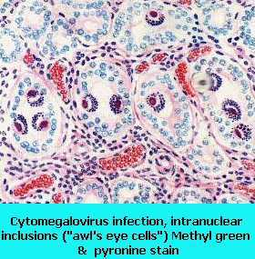
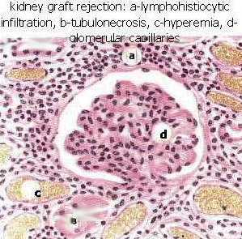

CONTROL OF REJECTION, PROBLEMS OF ORGAN TRANSPLANTATION
There are different methods to increase graft survival. Because HLA antigens are the major targets in transplant rejection, minimization of the HLA disparity between the donor and recipient would be expected to influence graft survival. Indeed, in the case of intro-familial (related donor) kidney transplants, a markedly beneficial effect of matching for class I antigens has been observed. For example, HLA-identical sibling transplants have survival rates of about 90% at three years, whereas the graft survival is reduced to 75% if the donor and recipient share only one haplotype. In cadaver renal transplants, matching for HLA class I antigens has at best a modest effect on graft acceptance. Additional matching for class II antigens results in a definite improvement in graft survival. In all likelihood, this benefit derived because class II antigen reactive CD4+ helper (and possibly, CD4+ cytotoxic) cells that play important roles in the induction of both cellular and humoral immunity are not triggered. In transplantation of cadaveric organs, unlike intro-familiar grafting, minor non-MHC histocompatibility antigens may seriously decrease the effectiveness of HLA-matching. Also, it has been noticed that the results of cadaveric transplantation are better in genetically homogenous populations (Europe, Japan), than in multinational outbreed communities (USA).
Except in the case of identical twins, which are obviously matched for all possible histocompatibility antigens, immunosuppressive therapy is a practical necessity in all other donor-recipient combinations. Even HLA-identical sibling may differ at several minor histocompability loci, which can evoke slow chronic rejection. At present, drugs such as azathioprine, steroids, cyclosporins, and antilymphocyte antibodies (such as monoclonal anti-CD3 or polyclonal anti-T cell) are employed. Introduction of cyclosporine as an immunosuppressive agent has had a major impact on clinical organ transplantation. Cyclosporine seems to suppress the activation of CD4+ helper T cells, once again pointing to the pivotal role these cells play in allograft rejection. Although immunosuppression has produced significant gains in terms of graft survival, it should be remembered that immunosuppressive therapy is like the proverbial double-edged sword. The price paid in the form of increased susceptibility to opportunistic fungal (Aspergillus, Candida), viral (EBV, CMV, HSV), protozoal (Pneumocystis, Toxoplasma, Coccidia, Giardia) and other infections is not small.

Furthermore, cyclosporine is itself a nephrotoxic and neurotoxic drug. There are some data for increase of lymphomas incidence under the influence of cyclosporine therapy. But this, as well as other manifestations of post-transplant lymphoproliferative disorder, is accounted for persistent EBV infection and for other infectious polyclonal lymphocyte activators present.
Paradoxical as it may seem, previous blood transfusions have been definitely proved to be of benefit in allowing greater survival of the transplanted kidneys, especially in cadaver renal transplants. Although blood transfusions do carry the definite risk of presensitization, such risk is small, contrary to earlier expectations. The exact mechanisms underlying this peculiar observation are unknown, but may be related to some kind of specific desensitization or anti-idiotypic suppression. Anti-idiotypic antibodies, imitating the MHC class I epitopes were successfully used in experiment to prolong the graft survival. New promising avenue is the administration of antibodies against CD28/CTLA-4 coreceptors in order to achieve tolerance by means of T cell activation prevention.
The transplantation of different organs encounters some specific hardships.
For renal allografts, which are made for patients with terminal chronic renal failure (nephrosclerosis), these are:
- Diseases of donor’s kidney, which may be clinically inapparent, proceed for a long time absolutely unrecognized and are common for 55% of allografts.
- Harvest injury (hypoxial changes caused by harvesting ischemia period) in renal parenchyma is typical for 50% of allografts, which may result in primary nonfunctional of graft in 30-40%of transplant.
- Nephrotoxicity of cyclosporine may be especially undesirable for renal grafting.
- Finally, almost any disease, provoking nephrosclerosis and the necessity of graft is able to occur recurrently and hit the grafted kidney. It is especially true for systemic autoimmune, IC mediated and metabolic reasons of chronic renal failure.

In transplantation of liver, performed in different kinds of cirrhosis and in extrahepatic biliary atresia, there are also some peculiar details:
- Unlike the case with renal transplantation, HLA matching is not a prime consideration in liver transplants. There are several reasons for this difference in donor selection: (1) unlike kidney, liver seems to be a "privileged" organ that is much less susceptible to transplant rejection; this peculiar property may be related to the fact that HLA antigens are expressed poorly on hepatocytes; (2) because the transplanted liver has to be snugly "fitted" in the space previously occupied by the host liver, the size of the donor organ is of major importance, especially in children; thus size takes priority over HLA match and (3) experience with the use of cyclosporine and other immunosuppressive drugs in renal transplants suggests that with effective immunosuppression the detrimental effects of an HLA mismatch can be overcome to a great extent.
- The predominant type of rejection in liver transplant is acute cellular one. It is specific for ducts and blood vessels are infiltrated by mononuclears and involved in “ductitis” and “vasculitis” much more intensively, than liver parenchyma. The resulting complications are cholestasis, biliary obstruction and vascular compromise.
- Different types of viral and autoimmune hepatitis may recurrently involve liver graft.
In heart transplantation, which is performed mostly in cardiomyopathies, the possible “glitches” are following:
- HLA matching is also not so careful, as for kidney due to the reasons, already mentioned for liver grafts.
- Rejection process has not any reliable clinical or laboratory criteria, neither it is reflected by ECG. This provokes the sad necessity to control the status of graft by means of repeated endomyocardial biopsies, which are not only unpleasant psychologically, but may cause real harm to heart function (prior biopsy site effect).
- Harvest damage of heart is commonly very essential.
- The “quilty effect” – subendocardial lymphoid infiltration may occur.
- The atherosclerosis is accelerated in coronary arteries of grafted heart.
Lungs transplantation, recently became the method of treatment for patients with advanced chronic destructive bronchopulmonary diseases, needs to take into account:
- High probability of lung infections after transplantation
- Gradual formation of obliterating bronchiolitis as a result of controlled rejection.
- The possibility of GVHR caused by the attack mounted by pulmonary lymphoid elements versus host.
Bone marrow transplantation is performed in hematological malignancies and metastatic tumors and marrow aplasia. The transplantation is performed after devastation of host immune system and killing of host malignant clones by large dose of irradiation. The main troubles, opposite each other, are:
- GVHR caused by grafted lymphocytes
- Rejection of transplant, mostly achieved by relatively radio-resistant host NK-cells. Graft cells do not display some of the self-MHC antigens, therefore they are not able to inactivate NK killing mechanism by direct contact mode.
- Trying to diminish the degree of rejection, doctor can decrease the number of grafted T cells, but this manipulation, at the same time, increases the risk of graft rejection.